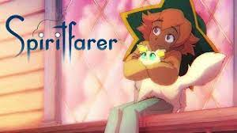

Não à-toa este texto começa com uma descrição do mito grego. O título mergulha nas águas da tradição clássica e se encharca de referência à história de Caronte. Assim, conhecer este mito ajuda a ter outra camada do game. De forma simples, Spiritfarer é um jogo de gerenciamento de itens e pessoas. O ciclo de gameplay é bastante básico: você conhece um espírito a eminência da morte e o resgata para seu barco. Em seguida, precisa prover todo conforto, alimento e desejos finais desta alma, até o momento de passagem daquela personagem. Repita isso algumas vezes, até o fim do jogo
Pode parecer pedante jogar o game, mas ele propõe uma experiência bastante antagônica aos jogos tradicionais. Não há aqui uma jornada do herói, um embate físico, lutas, tiros ou violência. Este game é sobre cuidar do outro e saber lidar com o luto. Por isso, é tão tocante, belo e sensível, como poucos títulos conseguem ser. Spiritfarer é isso: uma história diferente sobre o fim a que todos estamos fadados. Sem culpa, sem julgamento, com um olhar leve e bonito sobre a efemeridade das coisas. Junte a isso um toque da mitologia grega para dar simbolismo a tudo e entre de cabeça em um dos temas mais universais da vida.


Embora este game seja um espetáculo visual e de iluminação, com bons movimentos e personagens, o texto do jogo é algo muito acima da média para uma narrativa comum de games. Afinal, Spiritfarer é sobre o fim e, como diz Machado de Assis, é quando se atam as duas pontas da vida. É no leito de morte que as reflexões sobre tudo que se viveu acontecem. É quando “passa um filme na sua mente”. Este jogo é um constante “passar de filme”, dessa forma, tão profundo.
A trama começa com Stella e seu gatinho Daffodil encontrando Charón (ou o Caronte, na tradução para o português). Prestes a se aposentar, ele passa a função de barqueiro dos mortos para nossa dupla de protagonista com a simples missão: torne a transição a mais leve e confortável possível para os passageiros. preciso ressaltar aqui o cuidado com as palavras, pinçadas com muito carinho, que a equipe teve (o que reflete em uma versão em português com grande desafio).
título do jogo já é bastante significativo: o termo spiritfarer é um neologismo que une as palavras “spirt” (espírito), “far” (além), mais o sufixo “er” (que representa proficiência). Stella recebe este nome na versão em inglês, que foi belamente traduzido para barqueira dos espíritos na versão em português.
Aliás, os nomes da protagonista e seu gato são também muito simbólicos. Stella é uma derivação de estrela, sendo que na mitologia grega (e do jogo) é no que transformam aqueles que morreram. Tanto que, após a passagem, os espíritos aparecem como constelações no céu do jogo.
Já Daffodil é o nome inglês para a planta conhecida como narcisa. Bom, para começar, remete ao mito inglês de Narciso, que se afoga ao buscar a própria imagem no lago. O gato é uma representação do olhar intrínseco, uma visão do indivíduo para ele mesmo, como na mitologia grega. Por outro lado, Daffodil também é conhecido popularmente pelo nome Rosa de Charon, ou seja, a flor do Caronte como parceiro do barqueiro. Nada neste game é por acaso.
Para terminar o momento etimologia desta análise, valem duas mais observações conjuntas. Os termos “care” (cuidado) e “share” (compartilhamento) derivam da mesmo radical de Charón. Por este motivo, é exatamente estas duas coisas que Stella precisa fazer em seu barco: cuidar dos outros e compartilhar sua comida e espaço até o fim da vida de seus visitantes. A língua é linda demais e Spiritfarer sabe usar disso com maestria.